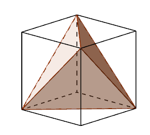
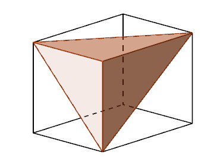
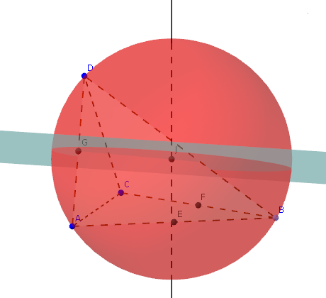
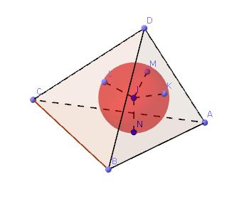
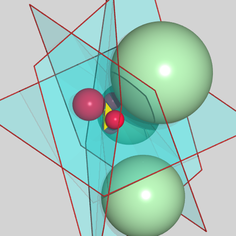
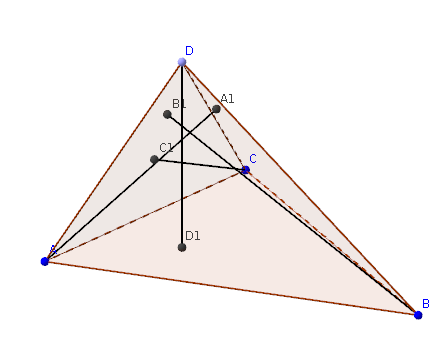

| Choisissez votre langue ! | Choose your language ! |
Définitions
Definitions
définition 1
Dans l'espace euclidien à 3 dimensions on appelle
'tétraèdre'
la figure formée par 4 points A,B,C,D . Les points A,B,C,D s'appellent les 'sommets' du tétraèdre.
Les segments [AB],[AC],[AD],[BC],[BD], [CD] s'appellent les 'arêtes' .
Deux arêtes n'ayant aucun sommet commun dont dites 'opposées' .
Les triangles BCD, ACD, ABD, ABC s'appellent les 'faces' .
definition 1
In 3-dimensional Euclidean space, the figure formed by 4 points A,B,C,D is called
'tetrahedron'
. The points A,B,C,D are called the 'vertices' of the tetrahedron.
The segments [AB],[AC],[AD],[BC],[BD],[CD] are called 'edges' .
Two edges having no common vertex which are said to be 'opposite' .
The triangles BCD, ACD, ABD, ABC are called the 'faces' .
Remarque: La plupart de ces définitions valent en fait pour tous les systèmes de n points (polyèdres).
Tétraèdres particuliers
Tétraèdres réguliers ( ) |
Tétraèdres trirectangles |
| Ce sont ceux qui ont toutes leurs arêtes et toutes leurs faces égales. Les 4 faces sont alors des triangles équilatéraux |
Ce sont ceux qui ont trois faces ayant un angle droit sur le même sommet |
|  |  |
Centre de gravité
Note: Most of these definitions actually hold for all n-point systems (polyhedra).
Special tetrahedra
Regular tetrahedra ( ) |
Trirectangle tetrahedra |
| These are those that have all their edges and all their faces equal. The 4 faces are then equilateral triangles |
These are those that have three faces having a right angle on the same vertex |
Center of gravity
définition 2
On appelle 'médiane' d'un tétraèdre toute droite joignant un sommet au de la face opposée.
definition 2
We call 'median' of a straight tetrahedron joining a vertex to the of the opposite face.
propriété 1
Dans tout tétraèdre les 4 médianes sont concourantes en un point appelé 'centre de gravité' du tétraèdre. Ce point est des 4 sommets.
Il est situé sur chaque médiane au 1/4 en partant du pied (ou au 3/4 en partant du sommet).
property 1
In any tetrahedron the 4 medians are concurrent at a point called the 'center of gravity' of the tetrahedron. This point is of the 4 vertices. < br /> It is located on each median at 1/4 starting from the foot (or at 3/4 starting from the top).
Cette propriété résulte du des barycentres.
Voici maintenant une appliquette vous montrant un téraèdre ABCD.
G1 est le centre de gravité du triangle ABC.
G2 est le centre de gravité du triangle DAB.
G3 est le centre de gravité du triangle DAC.
G4 est le centre de gravité du triangle DCB.
G est le centre de gravité du tétraèdre.
Vous pouvez avec les boutons faire varier les coordonnées des 4 sommets.
vous pouvez faire tourner la figure avec la souris ou le doigt.
Voici maintenant une appliquette vous montrant un téraèdre ABCD.
G1 est le centre de gravité du triangle ABC.
G2 est le centre de gravité du triangle DAB.
G3 est le centre de gravité du triangle DAC.
G4 est le centre de gravité du triangle DCB.
G est le centre de gravité du tétraèdre.
Vous pouvez avec les boutons faire varier les coordonnées des 4 sommets.
vous pouvez faire tourner la figure avec la souris ou le doigt.
This property results from the of barycenters.
Here is now an applet showing you a terahedron ABCD.
G1 is the center of gravity of triangle ABC.
G2 is the center of gravity of triangle DAB.
G3 is the center of gravity of the triangle DAC.
G4 is the center of gravity of triangle DCB.
G is the center of gravity of the tetrahedron.
You can use the buttons to vary the coordinates of the 4 vertices.
you can rotate the figure with mouse or finger.
Here is now an applet showing you a terahedron ABCD.
G1 is the center of gravity of triangle ABC.
G2 is the center of gravity of triangle DAB.
G3 is the center of gravity of the triangle DAC.
G4 is the center of gravity of triangle DCB.
G is the center of gravity of the tetrahedron.
You can use the buttons to vary the coordinates of the 4 vertices.
you can rotate the figure with mouse or finger.
Sphère circonscrite
Circumscribed sphere (circumsphere)
propriété 2
Pour tout tétraèdre (non aplati), il existe une et une seule sphère passant par les 4 sommets. On l'appelle la sphère 'circonscrite' au tétraèdre.
property 2
For any tetrahedron (not flattened), there is one and only one sphere passing through the 4 vertices. It is called the sphere 'circumscribed' (or for short ' circumsphere ') to the tetrahedron.
démonstration
Soit K le centre du cercle circonscrit au triangle ABC, et soit Δ la droite orthogonale en K au plan (ABC).Alors, par le théorème de Pythagore, tout point de Δ est équidistant des 3 sommets A,B et C.
Soit maintenant P le plan médiateur de [AD] (ou de [BD] ou de [CD]).
L'hypothèse faite sur les 4 points A,B,C,D assure que P et Δ sont sécants en un point J.
proof
Let K be the center of the circle circumscribed to triangle ABC, and let Δ the line orthogonal in K to the plane (ABC).Then, by the Pythagorean theorem, any point of Δ is equidistant from the 3 vertices A, B and C.
Now let P be the middle plane of [AD] (or of [BD] or of [CD]).
The assumption made on the 4 points A,B,C,D ensures that P and Δ intersect at a point J.
Le centre de cette sphère est évidemment équidistant des 4 sommets.
The center of this sphere is obviously equidistant from the 4 vertices.

Image générée avec GeoGebra3D
L'intersection de deux tels plans est donc une droite formée de points équidistants de 3 faces.
Si cette droite coupe tout plan bissecteur du couple formé par une quelconque de ces 3 faces avec la quatrième face en un point ce point est équidistant des 4 faces et est donc le centre d'une sphère tangente aux quatre faces.
Si e1=0, e2=0 e3=0 et e4=0 sont les des faces, les centres de ces sphères sont solutions des 8 systèmes linéaires obtenus à partir de
Sphères tangentes
Tout comme dans le cas du triangle, les plans bissecteurs des couples de faces, qui se coupent sur les arêtes, sont des ensembles de points équidistants de deux faces.L'intersection de deux tels plans est donc une droite formée de points équidistants de 3 faces.
Si cette droite coupe tout plan bissecteur du couple formé par une quelconque de ces 3 faces avec la quatrième face en un point ce point est équidistant des 4 faces et est donc le centre d'une sphère tangente aux quatre faces.
Si e1=0, e2=0 e3=0 et e4=0 sont les des faces, les centres de ces sphères sont solutions des 8 systèmes linéaires obtenus à partir de
\( \displaystyle \left\{ \begin{matrix} {{\mid e_{1} \mid} = {\mid e_{2} \mid}} \\ {{\mid e_{2} \mid} = {\mid e_{3} \mid}} \\ {{\mid e_{3} \mid} = {\mid e_{4} \mid}} \\ \end{matrix} \right. \)
Image generated with GeoGebra3D
The intersection of two such planes is therefore a straight line formed by equidistant points of 3 faces.
If this line intersects any bisector plane of the pair formed by any one of these 3 faces with the fourth face at a point, this point is equidistant from the 4 faces and is therefore the center of a sphere tangent to the four faces.
If e1=0, e2=0 e3=0 and e4=0 are the faces, the centers of these spheres are solutions of 8 linear systems obtained from
Tangent spheres
Just as in the case of the triangle, the bisector planes of the pairs of faces, which intersect on the edges, are sets of points equidistant from two faces.The intersection of two such planes is therefore a straight line formed by equidistant points of 3 faces.
If this line intersects any bisector plane of the pair formed by any one of these 3 faces with the fourth face at a point, this point is equidistant from the 4 faces and is therefore the center of a sphere tangent to the four faces.
If e1=0, e2=0 e3=0 and e4=0 are the faces, the centers of these spheres are solutions of 8 linear systems obtained from
\( \displaystyle \left\{ \begin{matrix} {{\mid e_{1} \mid} = {\mid e_{2} \mid}} \\ {{\mid e_{2} \mid} = {\mid e_{3} \mid}} \\ {{\mid e_{3} \mid} = {\mid e_{4} \mid}} \\ \end{matrix} \right. \)
propriété 3
Tout tétraèdre possède donc plusieurs sphères tangentes au 4 plans des faces. Les sphères tangentes aux quatre plans entrent dans une classification :
- Sphère tangente aux 4 faces en un point de ces faces (considérées comme des triangles), c'est la sphère 'inscrite'.
- Sphères tangentes à une face en un point de cette face et aux autres faces en un point de leur prolongement, ce sont les sphères 'ex-inscrites'.
- Sphères tangentes aux trois faces en un point de leur prolongement (ne touchant pas le tétraèdre proprement dit) et appelées quelquefois 'sphères des combles'.
property 3
Any tetrahedron therefore has several spheres tangent to the 4 planes of the faces. The spheres tangent to the four planes fall into a classification:
- Sphere tangent to the 4 faces at a point of these faces (considered as triangles), this is the 'inscribed' sphere.
- Spheres tangent to a face at a point of this face and to the other faces at a point of their extension, these are the 'ex-inscribed' spheres.
- Spheres tangent to the three faces at a point on their extension (not touching the proper tetrahedron itself) and sometimes called 'attic spheres'.
On peut démontrer que les 5 sphères (autres que les sphères des combles) existent toujours, les trois autres pouvant être rejetées à l'infini.
Pour une démonstration complète voir par exemple:
Géométrie de Marcel Berger (Cedic Fernand Nathan)
Volume 2 (triangles, cercles et sphères)
10.6.8 (page 168) ('les sphères des combles').
NB:Nous remercions Mr Laurent Chaumard de Montpellier qui nous a fait rectifier l'énoncé initialement faux figurant en cette place.
Pour une démonstration complète voir par exemple:
Géométrie de Marcel Berger (Cedic Fernand Nathan)
Volume 2 (triangles, cercles et sphères)
10.6.8 (page 168) ('les sphères des combles').
NB:Nous remercions Mr Laurent Chaumard de Montpellier qui nous a fait rectifier l'énoncé initialement faux figurant en cette place.
Sphère inscrite
It can be demonstrated that the 5 spheres (other than the attic spheres) always exist, the other three can be rejected ad infinitum.
For a complete demonstration see for example:
Geometry by Marcel Berger (Cedic Fernand Nathan)
Volume 2 (triangles, circles and spheres)
10.6.8 (page 168) ('attic spheres').
NB: We would like to thank Mr Laurent Chaumard from Montpellier who made us correct the initially false statement appearing in this place.
For a complete demonstration see for example:
Geometry by Marcel Berger (Cedic Fernand Nathan)
Volume 2 (triangles, circles and spheres)
10.6.8 (page 168) ('attic spheres').
NB: We would like to thank Mr Laurent Chaumard from Montpellier who made us correct the initially false statement appearing in this place.
Inscribed sphere

Image générée avec GeoGebra3D
Sphères ex-inscrites
Image generated with GeoGebra3D
Ex-inscribed spheres

Image : http://texgraph.tuxfamily.org/GalerieJvx.html
Hauteurs
Altitudes
définition 3
Dans un tétraèdre on appelle
'hauteur'
toute droite passant par un sommet et orthogonale à la face opposée à ce sommet.
definition 3
In a tetrahedron, we call
'altitude'
any straight line passing through a vertex and orthogonal to the face opposite to this vertex.

Image générée avec GeoGebra2D
 A la différence du triangle, les 4 hauteurs ne sont en général pas concourantes, mais elles peuvent l'être (voir le cas du tétraèdre trirectangle ainsi que celui du tétraèdre régulier, entre autres).
A la différence du triangle, les 4 hauteurs ne sont en général pas concourantes, mais elles peuvent l'être (voir le cas du tétraèdre trirectangle ainsi que celui du tétraèdre régulier, entre autres).
Image generated with GeoGebra2D
Unlike the triangle, the 4 altitudes are generally not concurrent, but they can be (see the case of the trirectangle tetrahedron as well as that of the regular tetrahedron, among others).
définition 4
Si les hauteurs sont concourantes on dit que le tétraèdre est
'orthocentrique'
.
definition 4
If the heights are concurrent, the tetrahedron is said to be
'orthocentric'
.
Pour une caractérisation des tétraèdres orthocentriques voir .
Pour un contre-exemple voir .
Pour un contre-exemple voir .
For a characterization of orthocentric tetrahedra see .
For a counter-example see .
For a counter-example see .
|
Création Gilles Dubois - licence CC-BY-SA
Created by Gilles Dubois - licence CC-BY-SA
|
Septembre 2023
September 2023
|
Version mobile Jquery
Mobile Jquery version
|
|